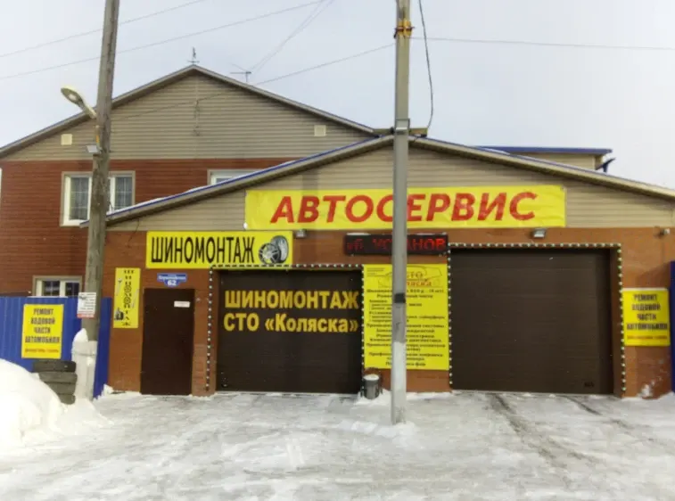

СТО Коляска
Автосервис: ремонт ходовой части автомобиля, ремонт подвески, ремонт выхлопных систем, замена масла, шиномонтаж
- Рейтинг 5 в 2ГИС по 148 оценкам, 113 отзывов
- Новосибирск, Первомайская улица, 62
- Шиномонтаж, ремонт и сварка в одном месте

Как устроена работа
Входит
- Шиномонтаж, ремонт и сварка в одном месте
- Лишних услуг не навязывают – по отзывам
- Помогают с запчастями: закажут и установят – по отзывам
- Wi-Fi для клиентов, доступный вход
- Запись по телефону или в WhatsApp, остановка Стрелочная в 80 м
Отдельно, если нужно
- Итоговая цена ремонта зависит от автомобиля и объёма работ
- Стоимость называют до начала работ
Услуги и цены
Прайса на карточке в 2ГИС нет. Цену называют до начала работ, уточняйте при записи.
Шиномонтаж
- Шиномонтажвозможна записьуточнить
- Замена колодокуточнить
- Ремонт порезовуточнить
- Правка и прокатка дисковуточнить
- Ошиповка шинуточнить
Ремонт и диагностика
- Компьютерная диагностикауточнить
- Ремонт ходовой части и подвескиуточнить
- Замена маслауточнить
- Ремонт выхлопных системуточнить
- Сварочные работыуточнить
- Ремонт инжекторовуточнить
Цены не указаны на карточке в 2ГИС – уточнить при записи.
Четыре шага от записи до выдачи
- 01
Записались
Позвонили или написали в WhatsApp, назвали марку и что нужно.
- 02
Осмотр
Мастер смотрит автомобиль и находит неисправность.
- 03
Согласование
Называют цену, вы решаете, что делать.
- 04
Выдача
Забираете машину и рассказываете, что понравилось.
Что говорят клиенты
Цены не кусаются
«Цены не кусаются, теперь с ремонтом и сваркой только к ним» – из отзыва в 2ГИС.
Быстро и недорого
«Быстро не дорого, мастер с пол слова понял что я хочу и исправил неисправность» – из отзыва в 2ГИС.
Не навязывают лишнее
«Все расскажет и покажет, не навязывают лишних услуг» – из отзыва в 2ГИС.
Берут в день обращения
«Приняли в этот же день, спустя 30 минут» – из отзыва в 2ГИС.
Отзывы с 2ГИС
«Ребята определенно знают, что делают. Сварили хорошо, без дыр. Цены не кусаются, теперь с ремонтом и сваркой только к ним»
Дмитрий Шлегель · 21 января 2026
«Быстро не дорого, мастер с пол слова понял что я хочу и исправил неисправность»
Максим Аникин · 25 апреля 2026
«Отличный сервис! Кто ищет хорошее качество по приемлемой цене смело сюда!»
Иван · 7 мая 2026
Отзывы с карточки в 2ГИС, дословно.
Частые вопросы
Как записаться?
Позвоните по телефону +7 993 007-90-10 либо напишите в WhatsApp.
Где вы находитесь?
Новосибирск, Первомайская улица, 62. Остановка Стрелочная в 80 метрах.
Какие услуги у вас есть?
Шиномонтаж, ремонт ходовой и подвески, диагностика, замена масла, ремонт выхлопных систем, сварочные работы.
Когда вы работаете?
График уточняйте по телефону при записи.
Запишитесь на удобный день
- Адрес
- Первомайская улица, 62, Новосибирск
- Часы
- График уточняйте по телефону
- Телефон
- +7 993 007-90-10